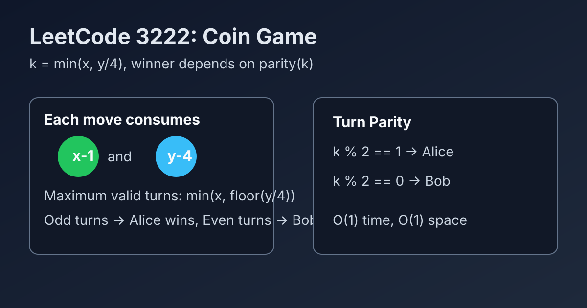

LeetCode 3222: Find the Winning Player in Coin Game (Turn Parity from Max Valid Moves)
LeetCode 3222MathGame TheoryToday we solve LeetCode 3222 - Find the Winning Player in Coin Game.
Source: https://leetcode.com/problems/find-the-winning-player-in-coin-game/

English
Problem Summary
Two players take turns. In each valid move, one player must consume 1 coin from pile x and 4 coins from pile y. If a player cannot make a valid move, that player loses. Return the winner.
Key Insight
The total number of legal moves is fixed as k = min(x, y / 4). Players simply alternate those k moves. If k is odd, Alice (first player) makes the last move and wins; if k is even, Bob wins.
Algorithm
- Compute k = min(x, y / 4).
- If k is odd, return "Alice".
- Otherwise, return "Bob".
Complexity Analysis
Time: O(1).
Space: O(1).
Reference Implementations (Java / Go / C++ / Python / JavaScript)
class Solution {
public String winningPlayer(int x, int y) {
int k = Math.min(x, y / 4);
return (k % 2 == 1) ? "Alice" : "Bob";
}
}func winningPlayer(x int, y int) string {
k := x
if y/4 < k {
k = y / 4
}
if k%2 == 1 {
return "Alice"
}
return "Bob"
}class Solution {
public:
string winningPlayer(int x, int y) {
int k = min(x, y / 4);
return (k % 2 == 1) ? "Alice" : "Bob";
}
};class Solution:
def winningPlayer(self, x: int, y: int) -> str:
k = min(x, y // 4)
return "Alice" if k % 2 == 1 else "Bob"function winningPlayer(x, y) {
const k = Math.min(x, Math.floor(y / 4));
return k % 2 === 1 ? "Alice" : "Bob";
}中文
题目概述
两名玩家轮流操作。每次合法操作都必须消耗 x 堆中的 1 枚硬币和 y 堆中的 4 枚硬币。无法进行合法操作的玩家判负，求最终获胜者。
核心思路
可执行操作总次数是固定的：k = min(x, y / 4)。双方只是在这 k 步里交替行动。若 k 为奇数，先手 Alice 走最后一步并获胜；若为偶数，Bob 获胜。
算法步骤
- 计算 k = min(x, y / 4)。
- 如果 k 是奇数，返回 "Alice"。
- 否则返回 "Bob"。
复杂度分析
时间复杂度：O(1)。
空间复杂度：O(1)。
多语言参考实现（Java / Go / C++ / Python / JavaScript）
class Solution {
public String winningPlayer(int x, int y) {
int k = Math.min(x, y / 4);
return (k % 2 == 1) ? "Alice" : "Bob";
}
}func winningPlayer(x int, y int) string {
k := x
if y/4 < k {
k = y / 4
}
if k%2 == 1 {
return "Alice"
}
return "Bob"
}class Solution {
public:
string winningPlayer(int x, int y) {
int k = min(x, y / 4);
return (k % 2 == 1) ? "Alice" : "Bob";
}
};class Solution:
def winningPlayer(self, x: int, y: int) -> str:
k = min(x, y // 4)
return "Alice" if k % 2 == 1 else "Bob"function winningPlayer(x, y) {
const k = Math.min(x, Math.floor(y / 4));
return k % 2 === 1 ? "Alice" : "Bob";
}
Comments